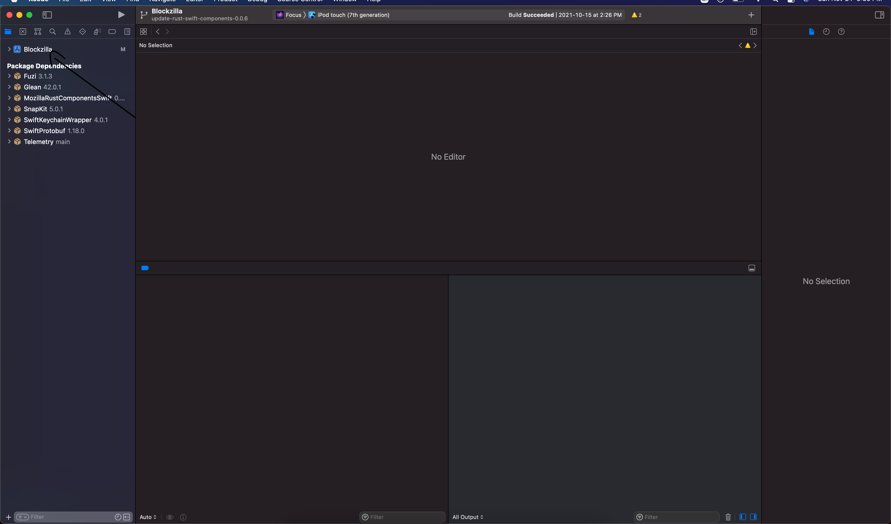
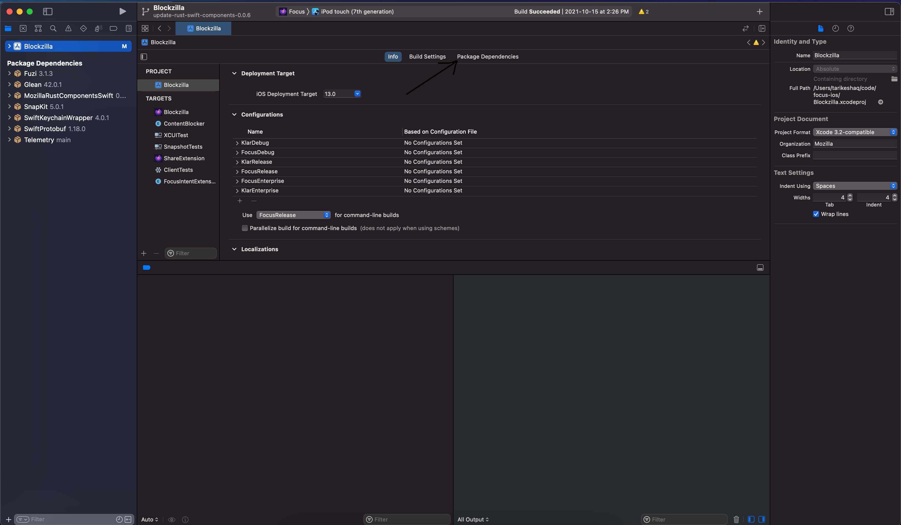
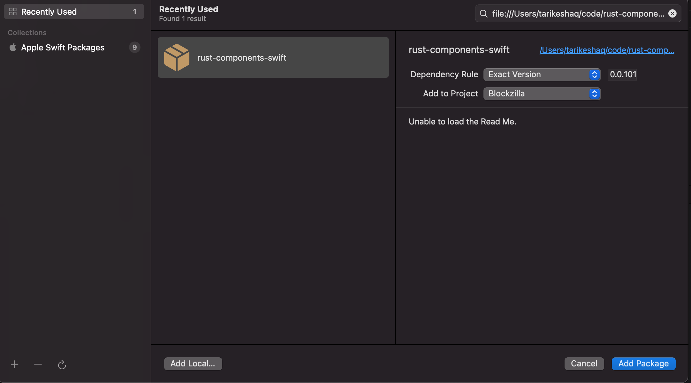

How to locally test Swift Package Manager components on Focus iOS
This is a guide on testing the Swift Package Manager component locally against a local build of Focus iOS. For more information on our Swift Package Manager design, read the ADR that introduced it
This guide assumes the component you want to test is already distributed with the
rust-components-swiftrepository, you can read the guide for adding a new component if you would like to distribute a new component.
To test a component locally, you will need to do the following:
- Build an xcframework in a local checkout of
application-services - Include the xcframework in a local checkout of
rust-components-swift - Run the
make-tagscript inrust-components-swiftusing a local checkout ofapplication-services - Include the local checkout of
rust-components-swiftinFocus
Below are more detailed instructions for each step
Building the xcframework
To build the xcframework do the following:
- In a local checkout of
application-services, navigate tomegazords/ios-rust/ - Run the
build-xcframework.shscript:sh ./build-xcframework.shThis will produce a file nameMozillaRustComponents.xcframework.zipthat contains the following, built for all our target iOS platforms.- The compiled Rust code for all the crates listed in
Cargo.tomlas a static library - The C header files and Swift module maps for the components
- The compiled Rust code for all the crates listed in
Include the xcframework in a local checkout of rust-components-swift
After you generated the MozillaRustComponents.xcframework.zip in the previous step, do the following to include it in a local checkout of rust-components-swift:
- clone a local checkout of
rust-components-swift, not inside theapplication-servicesrepository:git clone https://github.com/mozilla/rust-components.swift.git - Unzip the
MozillaRustComponents.xcframework.zipinto therust-components-swiftrepository: (Assuming you are in the root of therust-components-swiftdirectory andapplication-servicesis a neighbor directory)unzip ../application-services/megazords/ios-rust/MozillaRustComponents.xcframework.zip -d . - Change the
Package.swift's reference to the xcframework to point to unzipped folder. You can do this by uncommenting the following line:
and commenting out the following lines:path: "./MozillaRustComponents.xcframework"url: "SOME_URL_THAT_POINTS_TO_RELEASE", checksum: "SOME_CHECKSUM_FOR_RELEASE"
Run the make-tag script with a local checkout of application services
For this step, run the following script from inside the rust-components-swift repository (assuming that application-services is a neighboring directory to rust-components-swift). Change the X.Y.Z to be a valid semver version, for example: 0.0.101
./make_tag -l ../application-services X.Y.Z
Once that is done, your local checkout will now have a git tag X.Y.Z that can be pointed to by xCode
Include the local checkout of rust-components-swift in Focus
This is the final step to include your local changes into Focus. Do the following steps:
- Clone a local checkout of
Focusif you haven't already. Make sure you also install the project dependencies, more information in their build instructions - Open
Blockzilla.xcodeprojin Xcode - Navigate to the Swift Packages in Xcode:  
- Remove the dependency on
rust-components-swiftas listed on Xcode, you can click the dependency then click the- - Add a new swift package by clicking the
+:- On the top right, enter the full path to your
rust-components-swiftcheckout, preceded byfile://. If you don't know what that is, runpwdin while inrust-components-swift. For example:file:///Users/tarikeshaq/code/rust-components-swift - Change the version to be an exact version and equal the
X.Y.Zversion you set in the previous step. For example, if I ran./make_tag -l ../application-services 0.0.101, then my version would be0.0.101. This is what the dialog should look like:  - Click
Add Package - Now include the packages you would like to include, at the time of the writing of this doc, the packages to include in
FocusareNimbus,ViaductandRustLog.
- On the top right, enter the full path to your
- Finally, attempt to build focus, and if all goes well it should launch with your code. If you face any problems, feel free to contact us